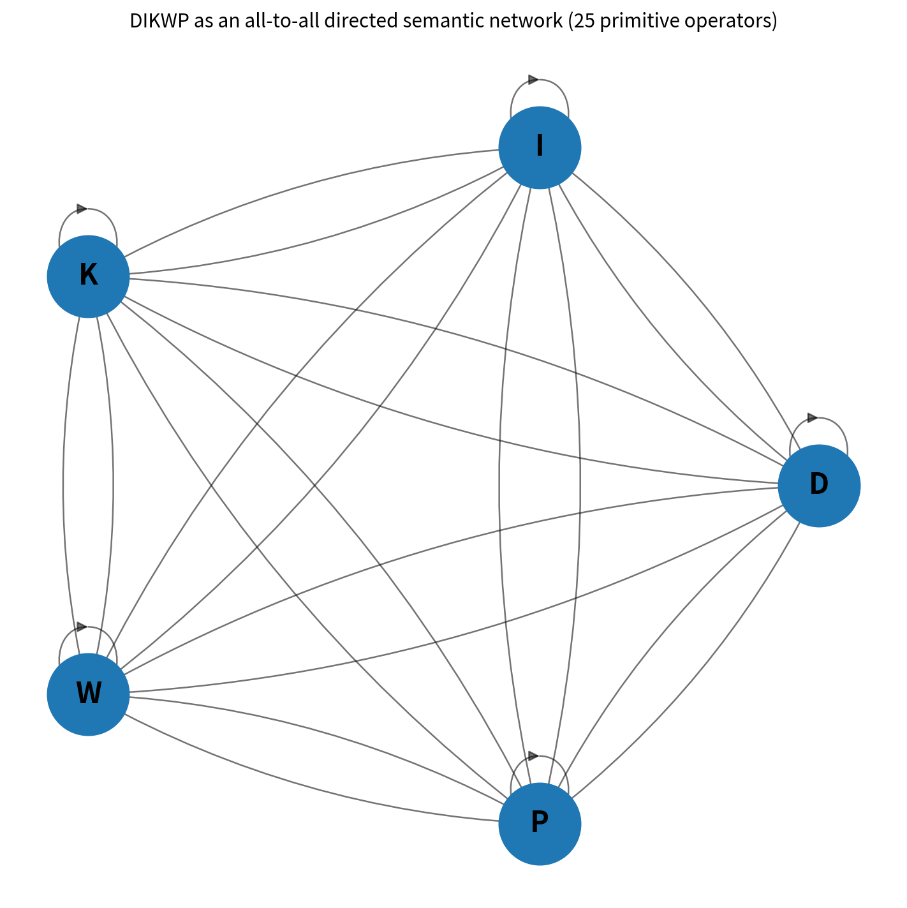
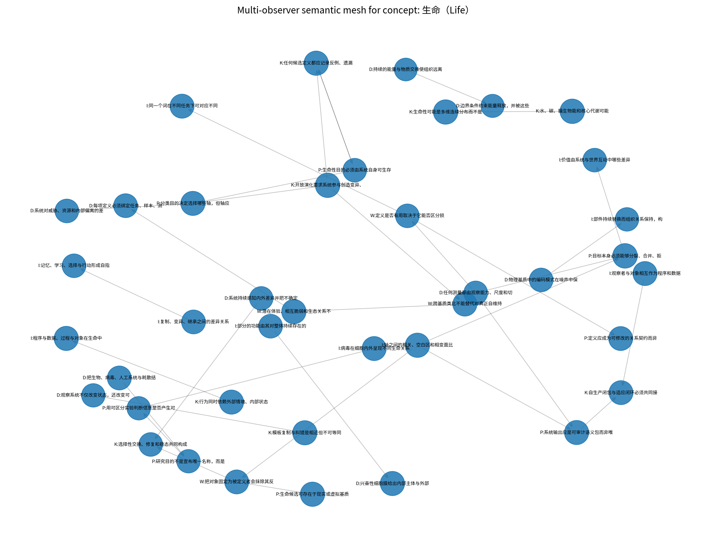
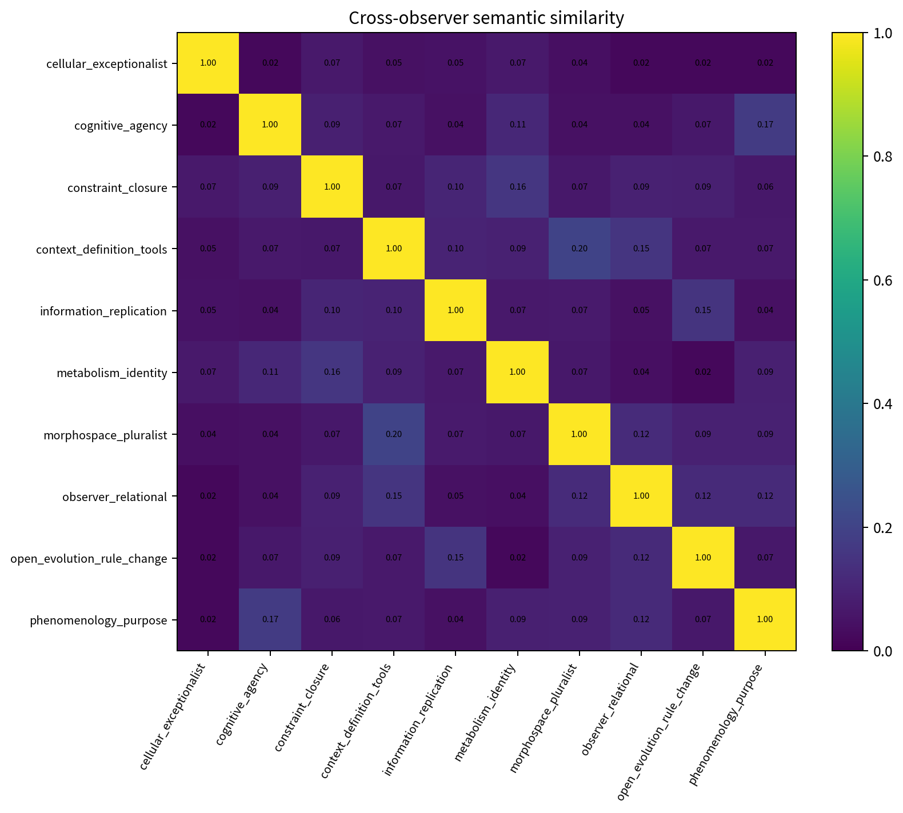
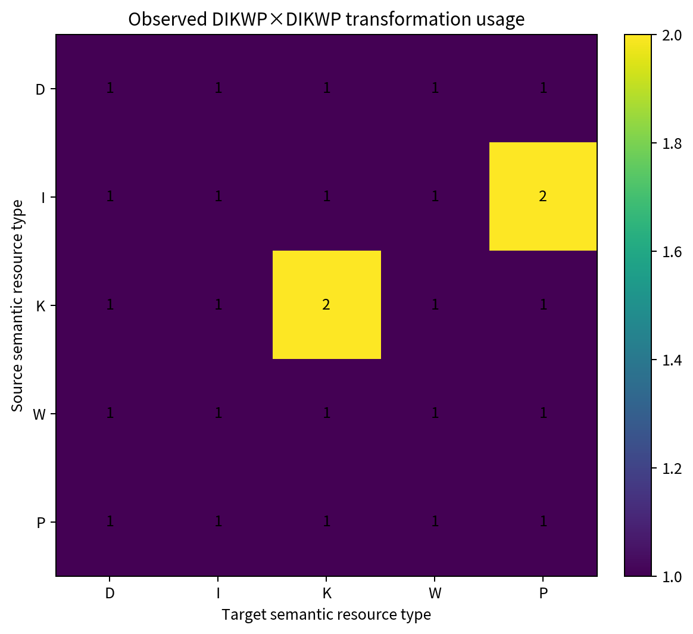

1. 网状结构与当前语义场


2. 跨观察者对齐与变换使用


3. 可拼接的跨主体不变量核
| 语义特征 | 支持度 | DIKWP分布 | 观察者 |
|---|---|---|---|
| relation | 0.90 | D 0.08I 0.51K 0.19P 0.11W 0.11 | cellular_exceptionalist、constraint_closure、context_definition_tools、information_replication、metabolism_identity、morphospace_pluralist、observer_relational、open_evolution_rule_change、phenomenology_purpose |
| purpose | 0.80 | D 0.06I 0.10K 0.17P 0.51W 0.15 | cognitive_agency、constraint_closure、context_definition_tools、information_replication、morphospace_pluralist、observer_relational、open_evolution_rule_change、phenomenology_purpose |
| definition_tool | 0.50 | D 0.14I 0.13K 0.23P 0.30W 0.20 | constraint_closure、context_definition_tools、metabolism_identity、morphospace_pluralist、observer_relational |
| boundary | 0.40 | D 0.33I 0.26K 0.21P 0.10W 0.10 | cellular_exceptionalist、cognitive_agency、constraint_closure、metabolism_identity |
| context | 0.40 | D 0.16I 0.22K 0.24P 0.19W 0.19 | cognitive_agency、context_definition_tools、metabolism_identity、morphospace_pluralist |
4. 不可被平均掉的冲突与阻碍
局部到全局状态：partial-global-section；阻碍分数：0.493
A shared semantic kernel can be glued, but it does not erase local meanings.
observer_relative — 分歧 0.810
支持度：0.10；正向：1；负向：1
任何测量都由观察能力、尺度和切分方式共同产生；定义应成为可修改的关系契约而非观察者的终局命名
cellular_only — 分歧 0.722
支持度：0.10；正向：1；负向：2
兴奋性细胞膜给出内部主体与外部环境的物理边界；跨基质类比不能替代对真正自维持细胞组织的实验证据
substrate_neutral — 分歧 0.531
支持度：0.20；正向：1；负向：2
把生物、病毒、人工系统与耗散结构放入同一候选样本集；生命候选可存在于现实或虚拟基质，但目的应体现内生保持与开放变化
5. 概念解缚：建议新增的语义坐标
概念投影损失
把高维语义场压缩成一个词或定义时，哪些关系、尺度、冲突和可能性被系统性丢失？
逃逸必要度：0.665
DIKPW
触发：context、continuum、definition_tool、morphospace、pluralism、semantic_loss
尺度依赖个体化
在细胞、个体、群体、生态或数字组织的不同尺度上，什么因果闭包使其成为可追踪的个体？
逃逸必要度：0.620
DIKPW
触发：boundary、individuality、multiscale、observer_boundary、scale
观察者参与与反向塑形
被评估对象是否会改变观察者的分类、测量和目的，使定义本身成为互动的一部分？
逃逸必要度：0.562
DIKPW
触发：interaction、mutual_transformation、observer_relative、push_back、subjectivity
可生存规范内生性
何种状态对系统而言是由其自身组织产生的可接受或不可接受状态，而非外部评价者强加？
逃逸必要度：0.530
DIKPW
触发：agency、healing、homeostasis、intrinsic_goal、self_maintenance、viability
规则自修改能力
系统是否能够改变产生自身适应、学习、复制或定义的规则，而不只是沿既定规则优化？
逃逸必要度：0.530
DIKPW
触发：meta_dynamics、novelty、open_evolution、rule_change、self_modification
基质—约束可迁移性
维持身份和功能的约束能否跨碳基、硅基、化学、机器人或虚拟基质迁移？
逃逸必要度：0.520
DIKPW
触发：constraint_closure、digital_life、substrate_neutral
6. 层级泄漏审计
判定：NETWORK_COMPATIBLE；层级泄漏分数 0.000
7. 高阶算子演化提案
obstruction-preserving-glue
路径：I->K → K->W → W->I
Construct a shared model, audit its value/power effects, then return contested distinctions to the information graph instead of forcing consensus.
验证：The operator is accepted only if it improves predictive coordination without reducing recorded dissent or provenance.
回滚：Rollback when minority residual coverage falls or contradiction detection weakens.
residual-to-new-axis
路径：K->I → I->P → P->D → D->K
Convert recurring untranslatable residuals into a candidate semantic dimension, design observations for it, and test whether it explains previously disconnected cases.
验证：Pre-register cases that the new axis must separate and cases on which it must remain neutral.
回滚：Delete or quarantine the axis if it merely renames an existing feature or amplifies one observer's language.
axis-seeding::concept-projection-loss
路径：P->I → I->D → D->K → K->P
Operationalize the candidate dimension '概念投影损失' through measurements, models, and purpose revision.
验证：把高维语义场压缩成一个词或定义时，哪些关系、尺度、冲突和可能性被系统性丢失？
回滚：Suspend if the dimension has low cross-observer transfer or cannot generate discriminating tests.
axis-seeding::scale-dependent-individuation
路径：P->I → I->D → D->K → K->P
Operationalize the candidate dimension '尺度依赖个体化' through measurements, models, and purpose revision.
验证：在细胞、个体、群体、生态或数字组织的不同尺度上，什么因果闭包使其成为可追踪的个体？
回滚：Suspend if the dimension has low cross-observer transfer or cannot generate discriminating tests.
axis-seeding::observer-participation
路径：P->I → I->D → D->K → K->P
Operationalize the candidate dimension '观察者参与与反向塑形' through measurements, models, and purpose revision.
验证：被评估对象是否会改变观察者的分类、测量和目的，使定义本身成为互动的一部分？
回滚：Suspend if the dimension has low cross-observer transfer or cannot generate discriminating tests.
8. 任务索引语义合同
recognition-and-classification
Compare candidates without asserting an observer-free essence.
允许输出：inside-operational-boundary、outside-operational-boundary、liminal、insufficient-evidence
禁止：single metaphysical truth label
research-and-concept-escape
Discover missing dimensions and redesign experiments when existing concepts compress away relevant structure.
允许输出：retain-axis、split-axis、merge-axis、seed-new-axis、defer
禁止：installing a new axis without preregistered discriminating tests
governance-and-rights
Make decisions while acknowledging that different operational purposes require different boundaries.
允许输出：precautionary-protection、ordinary-treatment、independent-review、no-action
禁止：using semantic consensus as a substitute for legal authority, welfare evidence, or due process
9. 解释边界
该仪表盘不生成“生命的唯一最终定义”。它输出跨观察者不变量、局部语义分支、不可拼接冲突、未翻译残差、任务索引语义合同以及值得新增的语义坐标。所谓“跨主体超越”是对单一观察者垄断的降低，不等于获得无条件、无语境的绝对客观真理。